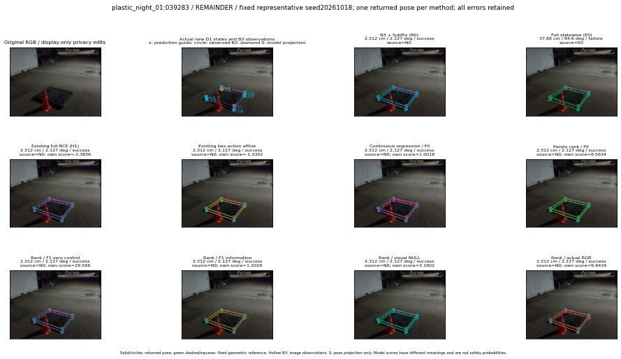

실선은 반환 자세, 초록 점선은 고정 기하 참조입니다. S는 영상 관측이 아닙니다. 점수는 모델별 의미가 다르며 보정된 안전 확률이 아닙니다. 개인정보 처리는 표시 사본에만 적용했습니다.
| 방법·seed | 위치 / 회전 / 공동성공 | 실제 출처 | 선택 후보 | 각 모델 자체 점수 |
|---|---|---|---|---|
| N0 | 2.312 cm / 2.127 deg / success | N0 | N/A | N/A |
| E0 | 37.86 cm / 84.6 deg / failure | E0 | N/A | N/A |
| E0_REGENERATED | 37.86 cm / 84.6 deg / failure | E0 | E0_REGENERATED | N/A |
| POSEFIX_SUBPIX_PF_ANCHOR | 2.124 cm / 2.248 deg / success | OTHER | N/A | N/A |
| POSEFIX_SUBPIX_YOLO_ANCHOR | 2.124 cm / 2.248 deg / success | OTHER | N/A | N/A |
| D1_H1_MLP_s20261018 | 2.312 cm / 2.127 deg / success | N0 | N0 | -2.383606433868408 |
| D1_H1_MLP_s20261019 | 37.86 cm / 84.6 deg / failure | E0 | E0_REGENERATED | -2.2545382976531982 |
| D1_H1_MLP_s20261020 | 2.312 cm / 2.127 deg / success | N0 | N0 | -3.306694984436035 |
| D1_H1_PAIR_MLP_s20261018 | 2.312 cm / 2.127 deg / success | N0 | N0 | -2.2934374809265137 |
| D1_H1_PAIR_MLP_s20261019 | 2.312 cm / 2.127 deg / success | N0 | N0 | -2.1992745399475098 |
| D1_H1_PAIR_MLP_s20261020 | 2.312 cm / 2.127 deg / success | N0 | N0 | -3.131317615509033 |
| D1_H1_PAIR_ROLE_AFFINE_s20261018 | 2.312 cm / 2.127 deg / success | N0 | N0 | -1.3302333354949951 |
| D1_H1_PAIR_ROLE_AFFINE_s20261019 | 2.312 cm / 2.127 deg / success | N0 | N0 | -1.541847586631775 |
| D1_H1_PAIR_ROLE_AFFINE_s20261020 | 2.312 cm / 2.127 deg / success | N0 | N0 | -1.040487289428711 |
| R_CONT_F0_s20261018 | 2.312 cm / 2.127 deg / success | N0 | N0 | 1.0017662048339844 |
| R_CONT_F0_s20261019 | 2.312 cm / 2.127 deg / success | N0 | N0 | 0.9710946083068848 |
| R_CONT_F0_s20261020 | 2.312 cm / 2.127 deg / success | N0 | N0 | 1.0768386125564575 |
| R_ORDER_F0_s20261018 | 2.312 cm / 2.127 deg / success | N0 | N0 | 8.563411712646484 |
| R_ORDER_F0_s20261019 | 2.312 cm / 2.127 deg / success | N0 | N0 | 12.518878936767578 |
| R_ORDER_F0_s20261020 | 2.312 cm / 2.127 deg / success | N0 | N0 | -7.212681770324707 |
| R_ORDER_F1_ZERO_s20261018 | 2.312 cm / 2.127 deg / success | N0 | N0 | 29.566150665283203 |
| R_ORDER_F1_ZERO_s20261019 | 2.312 cm / 2.127 deg / success | N0 | N0 | 36.25772476196289 |
| R_ORDER_F1_ZERO_s20261020 | 2.312 cm / 2.127 deg / success | N0 | N0 | 14.024046897888184 |
| R_ORDER_F1_s20261018 | 2.312 cm / 2.127 deg / success | N0 | N0 | 1.2029445171356201 |
| R_ORDER_F1_s20261019 | 2.579 cm / 1.673 deg / success | OTHER | WD0/ORIGINAL_WD/selected | 7.401729106903076 |
| R_ORDER_F1_s20261020 | 2.312 cm / 2.127 deg / success | N0 | N0 | 0.3595452308654785 |
| V_ORDER_NULL_s20261018 | 2.312 cm / 2.127 deg / success | N0 | N0 | 3.180248975753784 |
| V_ORDER_NULL_s20261019 | 2.251 cm / 1.332 deg / success | OTHER | P1/ORIGINAL_WD/selected | 2.3894543647766113 |
| V_ORDER_NULL_s20261020 | 2.312 cm / 2.127 deg / success | N0 | N0 | 0.5150681138038635 |
| V_ORDER_RGB_s20261018 | 2.312 cm / 2.127 deg / success | N0 | N0 | 9.943446159362793 |
| V_ORDER_RGB_s20261019 | 2.251 cm / 1.332 deg / success | OTHER | P1/ORIGINAL_WD/selected | 1.528192400932312 |
| V_ORDER_RGB_s20261020 | 2.312 cm / 2.127 deg / success | N0 | N0 | -8.99329662322998 |